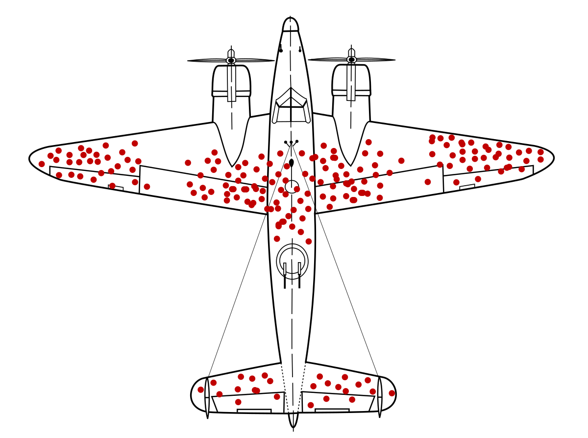
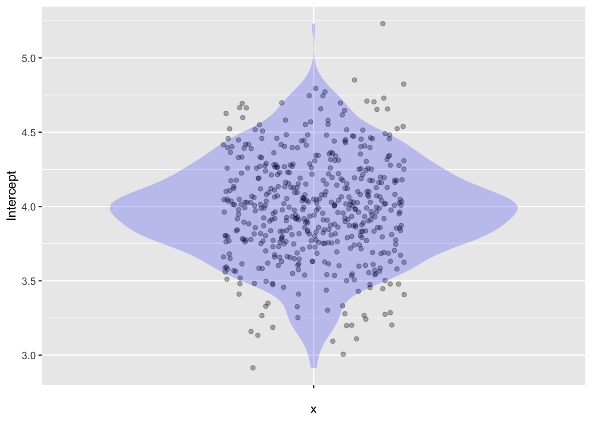

Sample <- sample(dag01, size=25)
Sample %>%
lm(y ~ 1, data = .) %>%
coef()(Intercept)
3.360868 Sampling variation is a subtle concept. Part of the difficulty in understanding sampling variation is the meaning of the word “sample,” which differs in use between everyday speech and statistical language. In everyday speech, a sample is:
“A small part or quantity intended to show what the whole is like.” — Oxford Languages
A food market will give you a sample of an item on sale: a tiny cup of a drink or a taste of a piece of fruit or other food item. Laundry-detergent companies sometimes send out a sample of their product in the form of a small foil packet suitable for only a single wash cycle. Paint stores keep small samples on hand to help customers choose from among the possibilities. A fabric sample is a little swatch of cloth cut from a a bigger bolt that a customer is considering buying.
In contrast, a sample in statistics is always a collection of multiple items. Usually, a sample is presented to us in the form of a data frame which records the measured attributes of each of the items in the sample. While it is possible for a data frame to have just a single row, it is perverse to use the word “sample” to describe a single item. Instead, we use other words to point to a single item: for instance “a case,” “a row,” “an individual,” “a datum,” or “a specimen.” Samples, like the word “data,” are always plural. Think of “sample” as akin to words like “herd,” “flock”, “pack”, or “school”: a collective. A single fish is not a school and a single wolf is not a pack. Similarly, a single row is not a sample but an item.
The dictionary definition of “sample” uses the word “whole” to describe where the sample comes from. Similarly, a statistical sample is a collection of items selected from a larger “whole.” Traditionally, statisticians have used the word “population” as the name for the “whole.” This is a nice metaphor; it’s easy to imagine the population of a state being the source of a sample in which each individual is a specific person. But the “whole” from which a sample is collected does not need to be a finite, definite set of individuals like the citizens of a state. For example, you have already seen how to collect a sample of any size you want from a DAG.
Our modus operandi in these Lessons takes a sample in the form of a data frame and summarizes it in the form of one or more numbers. (Typically, the numbers are the coefficients of a regression model, but it might be something else such as the mean or variance of a variable.) Each such number is called a “sample statistic,” but we think “sample summary” is a less confusing term and what we will use for these Lessons.
Practical statistical work almost always involves working with a single sample of size \(n\). As a thought experiment, however, we can imagine having multiple samples, each collected independently and at random from the same source. Now picture a process for computing a sample summary, say, a regression coefficient for a particular model specification. If we apply that same process to each of our imagined samples, we will likely get equivalent sample summaries that differ one from another. Such sample-to-sample differences are called “sampling variation.”
In this Lesson, we will simulate such a process of computing equivalent sample summaries from a set of samples. That way, we can see sampling variation directly.
In actual work with data, as opposed to simulations designed to illustrate statistical concepts, there is only one sample. We cannot see sampling variation directly in a single sample. But, that does not mean we can ignore the theoretical possibility.
Usually, we study a sample in order to inform our understanding of the broader process that generated the sample. Or, in the words of the dictionary definition at the start of this Lesson, we use a sample “to show what the whole is like.” Because of sampling variation, it would not be correct to say the “whole” is exactly like our sample. By quantifying sampling variation, we give a more complete description of the relationship of our particular sample to the “whole.”
We have already gotten into the habit of illustrating the row-to-row variation within a variable with a violin plot. The shape is a picture of the distribution of that variable.
In this Lesson, we will use simulation to generate many independent samples and the sample summary that goes along with each of those samples. The resulting varying set of numbers has, like any other variable, a distribution. Since the variation stems from sample-to-sample differences, we call it the “sampling distribution.” But this sampling distribution is a theoretical thing: what we would have gotten if we had collected many samples. Still, it will be a useful theoretical thing.
The obvious way to quantify the spread in the sampling distribution is—as usual—the variance. We will call this the “sampling variance.”
It’s important to note the “ing” ending in “sampling variance” and “sampling distribution.” Whereas the “sample variance” is the row-by-row variance calculated on a variable from a single sample, the “sampling variance” stems from the theoretical sample-by-sample variation.
Sometimes a data frame is not a sample. This happens when the data frame contains a row for every member of an actual, finite “population.” Such a complete enumeration—the inventory records of a merchant, the records kept of student grades by the school registrar—has a technical name: a “census.” Famously, many countries conduct a census of the population in which they try to record every resident of the country. For example, the US, UK, and China carry out a census every ten years.
In a typical setting, it is unfeasible to record every possible unit of observation.1 Such incomplete records constitute a “sample.” One of the great successes of statistics is the means to draw useful information from a sample, at least when the sample is collected correctly.
Sampling is called for when we want to find out about a large group but lack time, energy, money, or the other resources needed to contact every group member. For instance, France collects samples at short intervals to collect up-to-date data while staying within a budget. The name used for the process—recensement en continu or “rolling census”—signals the intent. Over several years, the French rolling census contacts about 70% of the population.
Sometimes, as in quality control in manufacturing, the measurement process is destructive: the measurement process consumes the item. In a destructive measurement situation, it would be pointless to measure every single item. Instead, a sample will have to do.
Collecting a reliable sample is usually considerable work. An ideal is the “simple random sample” (SRS), where all of the items are available, but only some are selected—completely at random—for recording as data. Undertaking an SRS requires assembling a “sampling frame,” essentially a census. Then, with the sampling frame in hand, a computer or throws of the dice can accomplish the random selection for the sample.
Understandably, if a census is unfeasible, constructing a perfect sampling frame is hardly less so. In practice, the sample is assembled by randomly dialing phone numbers or taking every 10th visitor to a clinic or similar means. Unlike genuinely random samples, the samples created by these practical methods are not necessarily representative of the larger group. For instance, many people will not answer a phone call from a stranger; such people are underrepresented in the sample. Similarly, the people who can get to the clinic may be healthier than those who cannot. Such unrepresentativeness is called “sampling bias.”
Professional work, such as collecting unemployment data, often requires government-level resources. Assembling representative samples uses specialized statistical techniques such as stratification and weighting of the results. We will not cover the specialized techniques in this introductory course, even though they are essential in creating representative samples. The table of contents of a classic text, William Cochran’s Sampling techniques shows what is involved.
All statistical thinkers, whether expert in sampling techniques or not, should be aware of factors that can bias a sample away from being representative. In political polls, many (most?) people will not respond to the questions. If this non-response stems from, for example, an expectation that the response will be unpopular, then the poll sample will not adequately reflect unpopular opinions. Such non-response bias can be significant, even overwhelming, in surveys.
Survival bias plays a role in many settings. The mosaicData::TenMileRace data frame provides an example, recording the running times of 8636 participants in a 10-mile road race and including information about each runner’s age. Can such data carry information about changes in running performance as people age? The data frame includes runners aged 10 to 87. Nevertheless, a model of running time as a function of age from this data frame is seriously biased. The reason? As people age, casual runners tend to drop out of such races. So the older runners are skewed toward higher performance. (We can see this by taking a different approach to the sample: collecting data over multiple years and tracking individual runners as they age.
An inspiring story about dealing with survival bias comes from a World War II study of the damage sustained by bombers due to enemy guns. The sample, by necessity, included only those bombers that survived the mission and returned to base. The holes in those surviving bombers tell a story of survival bias. Shell holes on the surviving planes were clustered in certain areas, as depicted in Figure 22.1. The clustering stems from survivor bias. The unfortunate planes hit in the middle of the wings, cockpit, engines, and the back of the fuselage did not return to base. Shell hits in those areas never made it into the record.

Sampling variation is a form of noise. Unlike some other forms of noise, modeling cannot filter out sampling variation or reduce its magnitude. Sampling variation is easiest to see by collecting multiple samples from the same source and summarizing each one. The summaries likely will vary from sample to sample: sampling variation.
Typically, the data frame at hand is our only sample. With no other samples to compare it to, it may seem impossible to measure sampling variation. In this Lesson, we will use simulations from DAGs to study sampling variation. DAG simulations are suited to this because we can effortlessly collect as many samples as we wish from a DAG. In Lesson 23, we will use the knowledge gained from the simulations to see how to measure sampling variation even when there is only one sample.
In the spirit of starting simply, we return to dag01. This DAG is \(\mathtt{x}\longrightarrow\mathtt{y}\). The causal formula setting the value of y is y ~ 4 + 1.5 * x + exo().
It is crucial to remember that sampling variation is not about the row-to-row variation in a single sample. Rather, it is about the variation in the summary from one sample to another. So our initial process for exploring sampling variation will be to carry out many trials, each trial being a summary of a sample.
A single sampling trial consists of taking a random sample and computing a sample statistic. To illustrate, here is one trial using a sample size \(n=25\) and a simple model modification, y ~ 1.
Sample <- sample(dag01, size=25)
Sample %>%
lm(y ~ 1, data = .) %>%
coef()(Intercept)
3.360868 We cannot see sampling variation directly in the above result because there is only one trial. The sampling variation becomes evident when we run many trials. In each trial, a new sample (of size \(n=25\) is taken and summarized.)
Trials <- do(500) * {
Sample <- sample(dag01, size=25)
Sample %>%
lm(y ~ 1, data = .) %>%
coef()
}Graphics provide a nice way to visualize the sampling variation. Figure 22.2 shows the results from the set of trials.

y~1 is fitted to a sample from dag01 of size \(n=25\).The variance of the sampling distribution, that is, the sampling variance, is:
Trials %>%
summarize(sampling_variance = var(Intercept))| sampling_variance |
|---|
| 0.122632 |
Often, statisticians prefer to use the square root of the sampling variance, which has a technical name in statistics: the standard error. The standard error is an ordinary standard deviation in a particular context: the standard deviation of a sample of summaries. The words standard error should be followed by a description of the summary and the size of the individual samples involved. Here it would be, “The standard error of the Intercept coefficient from a sample of size \(n=25\) is around 0.36.”
It is easy to confuse “standard error” with “standard deviation.” Adding to the potential confusion is another related term, the “margin of error.” To avoid this confusion, we will tend to use an interval description of the sampling variation called the “confidence interval.” However, for the present, we will continue with the standard error, sometimes written SE for short.
We found an SE of 0.36 on the Intercept in a sample of size \(n=25\). We can see how the SE depends on sample size by repeating the trials for several different sizes, say, \(n=25\), 100, 400, 1600, 6400, 25,000, and 100,000.
The following command estimates the SE a sample of size 400:
Trials <- do(1000) * {
Sample <- sample(dag01, size=25)
Sample %>%
lm(y ~ 1, data = .) %>%
coef()
}
Trials %>% summarize(svar400 = var(Intercept),
se400 = sd(Intercept))| svar400 | se400 |
|---|---|
| 0.12766 | 0.3572954 |
We repeated this process for each of the other sample sizes. Table 22.1 reports the results.
| n | samping_variance | standard_error |
|---|---|---|
| 25 | 0.1296000 | 0.3600 |
| 100 | 0.0361000 | 0.1900 |
| 400 | 0.0082810 | 0.0910 |
| 1600 | 0.0018490 | 0.0430 |
| 6400 | 0.0005290 | 0.0230 |
| 25000 | 0.0001210 | 0.0110 |
| 100000 | 0.0000314 | 0.0056 |
There is a pattern in Table 22.1. Every time we quadruple \(n\), the sampling variance goes down by a factor of four. Consequently, the standard error—which is just the square-root of the sampling variance—goes down by a factor of 2, that is, \(\sqrt{4}\). (The pattern is not exact because there is also sampling variation in the trials, which are really just a sample of all possible trials.)
Conclusion: The larger the sample size, the smaller the sampling variance. For a sample of size \(n\), the sampling variance will be proportional to \(1/n\). Or, in terms of the standard error: For a sample size of \(n\), the SE will be proportional to \(1/\sqrt{\strut n}\).
The “confidence interval” is a more user-friendly format than SE for describing the amount of sampling variation. Being an interval, write it either as [lower, upper] or center\(\pm\)half-width. These styles are equivalent; both styles are correct. (The preferred style can depend on the field or the journal publishing the report.)
In practice, confidence intervals are calculated using special-purpose software such as the conf_interval() function, for instance:
Hill_racing %>%
lm(time ~ distance + climb, data=.) %>%
conf_interval()| term | .lwr | .upr |
|---|---|---|
| (Intercept) | -533.432471 | -406.521402 |
| distance | 246.387096 | 261.229494 |
| climb | 2.493307 | 2.726209 |
Notice that there is a separate confidence interval for each model coefficient. The sampling variation is essentially the same, but that variation appears different when translated to the various coefficients’ units.
The confidence intervals on the model time ~ distance + climb, report the results to many digits. Such a report is appropriate for further calculations that might need doing, but it is usually not appropriate for a human reader.
To know how many digits are worth reporting to humans, look toward the standard error. The standard error is a part of a different kind of summary of a model: the “regression report.” We will only need to look at regression reports in the last few Lessons of the course. Here we want to point out how many digits are worth reporting to humans. That requires looking at the standard error itself.
Previously, we looked at the confidence intervals on coefficients from the Hill_racing model. Now we look at the regression summary, which contains the information on sampling variation in a different format.
Hill_racing %>%
lm(time ~ distance + climb, data=.) %>%
regression_summary()| term | estimate | std.error | statistic | p.value |
|---|---|---|---|---|
| (Intercept) | -469.976937 | 32.3582241 | -14.52419 | 0 |
| distance | 253.808295 | 3.7843322 | 67.06819 | 0 |
| climb | 2.609758 | 0.0593826 | 43.94821 | 0 |
Each coefficient’s standard error appears in the std.error column of the regression summary.
For the human reader, only the first two significant digits of the standard error are worth reporting. (This is true regardless of the data and model design.) Here, the SE is 32 for the Intercept, 3.8 for the distance coefficient, and 0.059 for the climb coefficient. The confidence interval will be the coefficient (column labeled estimate) plus or minus “twice” the std.error. It is appropriate to round the confidence interval (for a human reader) to the first two significant digits of the standard error.
For example, the confidence interval on the distance coefficient will be \(253.808295 \pm 2 \times 3.78433220\). Keep only the digits before the first two significant digits of the SE, so the reported interval can be \(253.8 \pm 3.8\).
Even a population “census” inevitably leaves out some individuals.↩︎